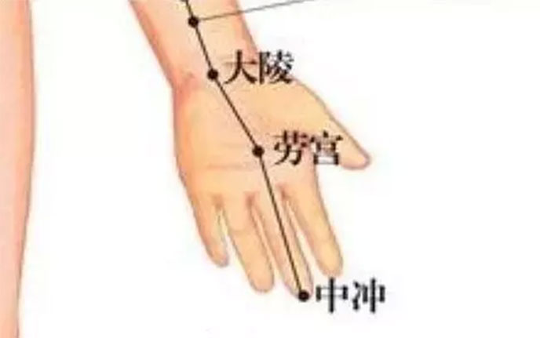

手心有个热性的穴位，搓手心可以生“火”，补阳。脚心有个凉性的穴位，搓脚心可以滋阴补水，用热的手心，搓脚心，可以使水火交融，阴阳平衡，很多人的失眠就是这样“搓”好的。
手心的穴位叫劳宫，手握拳时，中指下的那个地方就是，这里是心包经的穴位，和心包经一样属“火”，性质偏热。有个“摩拳擦掌”的成语，一般是形容大干一场之前的准备，在大干一场之前需要鼓动阳气，所以会摩擦手心中这个热性的穴位。
脚心上的穴位叫涌泉，是肾经的井穴，所谓井穴，就是肾经是从这里发源的，肾经性质和心包经是相对的，属于水，有凉性，它的井穴也具备同样性质，多用它来滋阴补水。有的人眼睛发红，肿了，吃去火药总是不好，最后通过按摩脚心治好的，之所以有如此神效，因为这个人的火是虚火，虚火的出现是因为水少了，要补水才能降火，按摩涌泉就等于给身体吃了滋阴药，补水了 有的人心火盛，平时心烦，失眠，多梦，如果吃药，医生会开牛黄清心，天王补心之类的，去火的同时滋养心阴，才能把虚火平复掉，这种人可以先把手心搓热，之后用热的手心搓脚心，这样一来心火就和肾水交汇了，浮越在上的心火因为有了肾水就降了下来，这在中医又称为“引火归元”，多用在治疗心火浮越导致的各种虚性亢奋时，比如失眠，口疮，而且口疮只在舌尖
